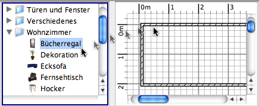

| Hinzufügen von Möbeln | |||
Um ihrem Haus Möbel hinzuzufügen, ziehen Sie (drag and drop) Möbel vom Katalog auf Ihren Haus-Plan oder in Ihre Einrichtungs-Liste.  SIe können auch einige Möbel im Katalog auswählen und dann auf Mobiliar > Zum Haus hinzufügen klicken, oder ebenso auf das Hinzufügen-Symbol klicken.
Wenn Sie Möbelstücke auf den Plan ziehen, ist deren linke obere Ecke dort, wo Sie den Mausknopf loslassen. Die Möbelstücke, die Sie gerade hinzugefügt haben, sind markiert und werden gleichzeitig in die Liste, den Plan und die 3D-Ansicht eingetragen. Während der Ladezeit der 3D-Modelle werden diese von weißen Platzhalten dargestellt. |
|